<title>Shop B and Menu A</title>
<meta name="claude:viewport-fit-sides" content="cover">
<link rel="stylesheet" href="https://fonts.googleapis.com/css2?family=Inter:wght@400;500;600;700&family=Space+Grotesk:wght@500;600&display=swap">
<style>
/* Before and after, the counts beside each picture. Same frame as the
   one-screen Options page so the two read as one series. */
:root { --bg:#f3f4f6; --fg:#16191d; --muted:#5b6370; --panel:#ffffff; --line:#d9dde3; --accent:#1f8fa8; --bad:#b4561f; --good:#2f8a4e;
  --display:"Space Grotesk",Inter,system-ui,sans-serif; --body:Inter,system-ui,sans-serif; }
@media (prefers-color-scheme: dark) { :root:not([data-theme="light"]) { --bg:#0f1215; --fg:#e8ebee; --muted:#98a1ad; --panel:#171b20; --line:#2a3038; --accent:#5cc4dc; --bad:#f0a070; --good:#7fd39a; color-scheme:dark } }
:root[data-theme="dark"] { --bg:#0f1215; --fg:#e8ebee; --muted:#98a1ad; --panel:#171b20; --line:#2a3038; --accent:#5cc4dc; --bad:#f0a070; --good:#7fd39a; color-scheme:dark }
body { background:var(--bg); color:var(--fg); font:15px/1.55 var(--body); padding-left:max(16px,env(safe-area-inset-left,0px)); padding-right:max(16px,env(safe-area-inset-right,0px)); padding-block:32px 56px }
main { max-width:1180px; margin:0 auto; display:grid; gap:40px }
h1 { font:600 2rem/1.15 var(--display); margin:0; text-wrap:balance }
h2 { font:600 1.3rem/1.3 var(--display); margin:0 0 6px; text-wrap:balance }
p { margin:0; max-width:72ch }
.lede { color:var(--muted); margin-top:8px }
section { display:grid; gap:14px }
.pair { display:grid; grid-template-columns:1fr 1fr; gap:14px }
.one { display:grid; grid-template-columns:1fr; gap:14px }
@media (max-width:760px) { .pair { grid-template-columns:1fr } }
figure { margin:0; background:var(--panel); border:1px solid var(--line); border-radius:10px; overflow:hidden; min-width:0 }
figure img { display:block; width:100%; height:auto }
figcaption { padding:10px 12px; font-size:.92rem; display:grid; gap:2px }
.tag { font:600 .72rem/1 var(--body); letter-spacing:.08em; text-transform:uppercase }
.before .tag { color:var(--bad) } .after .tag { color:var(--good) }
.count { font-weight:600 }
.muted { color:var(--muted) }
table { border-collapse:collapse; width:100%; font-size:.93rem }
.wrap { overflow-x:auto; background:var(--panel); border:1px solid var(--line); border-radius:10px }
th, td { text-align:left; padding:8px 12px; border-bottom:1px solid var(--line); vertical-align:top }
th { font-weight:600; color:var(--muted); font-size:.82rem; letter-spacing:.03em }
tr:last-child td { border-bottom:0 }
ul { margin:0; padding-left:1.2em; max-width:72ch } li { margin:4px 0 }
kbd { font:600 .85em var(--body); border:1px solid var(--line); border-radius:4px; padding:0 5px; background:var(--panel) }
code { font-size:.9em }
</style>
<main>
<header>
  <h1>Shop B and menu A, built</h1>
  <p class="lede">Your picks of 19:37Z. With these, no page of the start menu, the run shop or the gun range scrolls at any UI size. Every picture is the game's own window, drawn by <code>larder-world look=</code> at the size named. "200% on 1080 lines" is 1000 x 562 UI units, the worst 16:9 case; 21:9 at 200% is 1280 x 540.</p>
</header>

<section>
  <h2>What fits</h2>
  <div class="wrap"><table>
    <tr><th>Page</th><th>Before</th><th>After</th></tr>
    <tr><td>Run shop, 200% on 1080 lines</td><td>10 tiles on screen (8 squad upgrades, the Buildings and Tools folders). The 4 guns, the gun's 3 cards, the bag and the 5 cards on offer were below the fold</td><td>The gun's 3 slots and the bag always on screen. Every tab whole on one page: Cards 5 of 5, Guns 4 of 4, Squad 8 of 8, Buildings 7 of 7, Tools whole</td></tr>
    <tr><td>Run shop, the window as it opens (1600 x 972 at 125%)</td><td>Upgrades, 4 guns and the gun's 3 cards. The bag and the 5 cards on offer were below the fold</td><td>Everything, as at 200%</td></tr>
    <tr><td>Gun range armory, 200% on 1080 lines</td><td>The 5 range tools and one describing box. The 8 guns, 20 bullets, 14 modifiers, the gun and the bag were below the fold</td><td>Guns 8 of 8 on one page, Bullets 20 of 20 in one grid, both modifier shelves whole (6 and 8). The tools are on the bottom bar</td></tr>
    <tr><td>Armory, 21:9 at 200%</td><td>(not drawn)</td><td>Guns 6 of 8 on page 1 of 2; every other tab whole</td></tr>
    <tr><td>Main menu, 200% on 1080 lines</td><td>4 of 9 rows whole. Gun range was cut, and Options, Keys, Edit maps and Quit were below the fold</td><td>8 of 8 rows, ending at 484 of 562 units (Keys is Options' last tab, and F1 or ? opens it)</td></tr>
  </table></div>
  <p class="muted">The fit test draws the shop and the armory at eight sizes on every tab, with each row picked in turn. Every word must be on screen, no word may touch another or be under 12.5 units, and nothing may scroll. A second test does the same for the game's own run shop and gun range: every shop tab must be one page and the armory's guns at most two.</p>
</section>

<section>
  <h2>The run shop</h2>
  <p>The planet's line and your points sit along the top. The gun and the bag are pinned under it and never move. Below them, tabs sit over a counter of half-size tiles, and one pane at the right tells you about whatever you pick. A click picks a tile; <kbd>Enter</kbd> or the pane's button buys it. Dragging a card onto a slot of the gun buys it and puts it there. <kbd>Tab</kbd> or <kbd>1</kbd>-<kbd>9</kbd> changes tabs. A buy the run refuses now says why on the bottom bar.</p>
  <div class="pair">
    <figure class="before">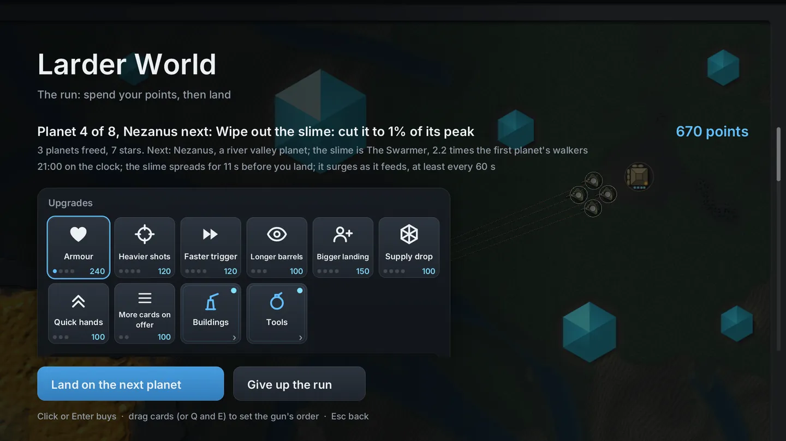<figcaption><span class="tag">Before, 200%</span><span class="count">10 tiles on screen</span><span class="muted">Title, subtitle and briefing take about 220 of 562 units. The gun, bag, cards and guns are below the fold</span></figcaption></figure>
    <figure class="after">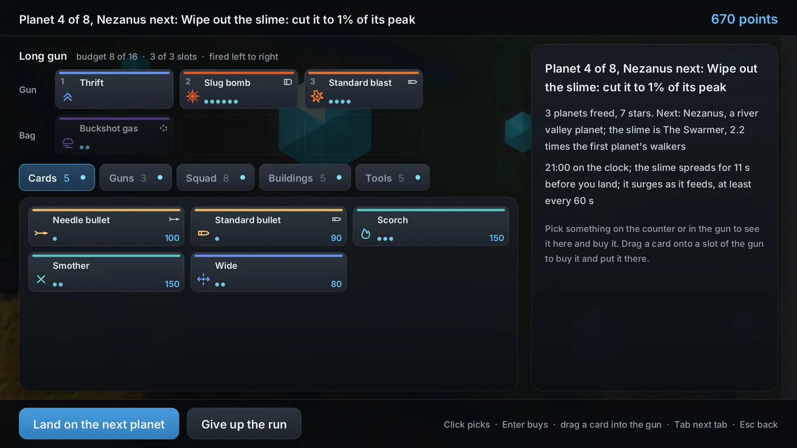<figcaption><span class="tag">After, 200%</span><span class="count">Gun 3 of 3 slots, bag 1, Cards 5 of 5</span><span class="muted">With nothing picked, the pane shows the planet's briefing</span></figcaption></figure>
    <figure class="after">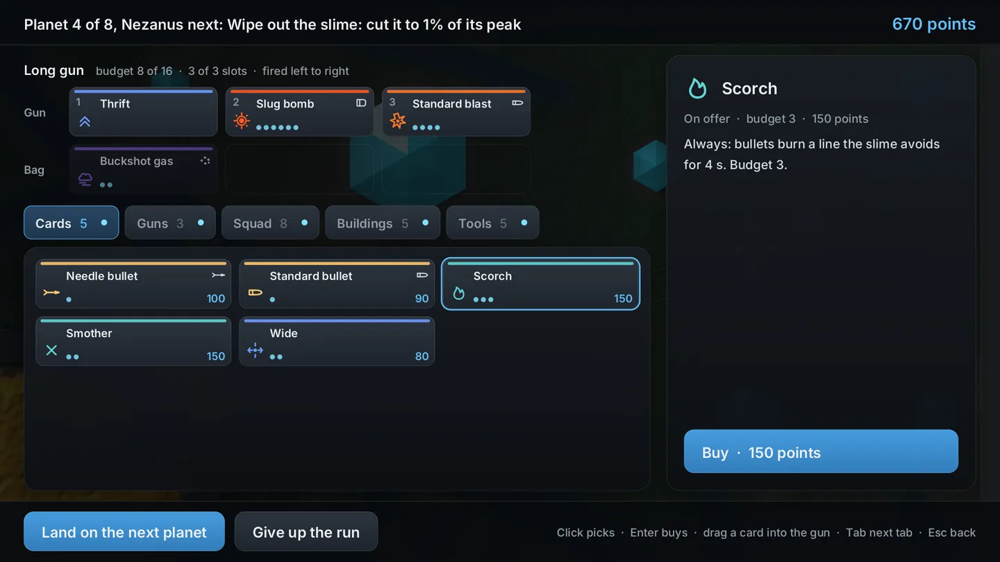<figcaption><span class="tag">After, a card picked</span><span class="count">Scorch: on offer, budget 3, 150 points</span><span class="muted">The pane gives the whole text. The button reads Put it in the gun, or Take it out, for a card you own</span></figcaption></figure>
    <figure class="after">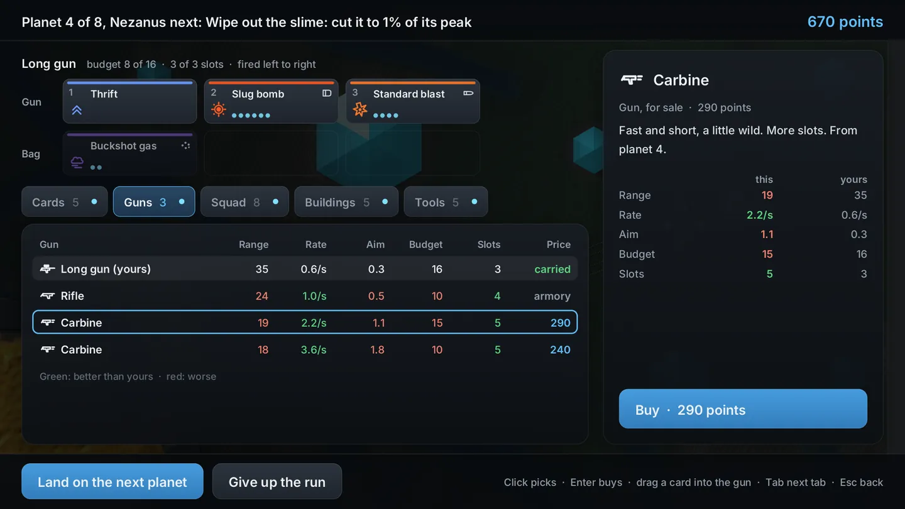<figcaption><span class="tag">After, the Guns tab</span><span class="count">4 of 4 guns, one table</span><span class="muted">Green is better than your gun and red is worse. The pane puts the picked gun beside yours</span></figcaption></figure>
    <figure class="after">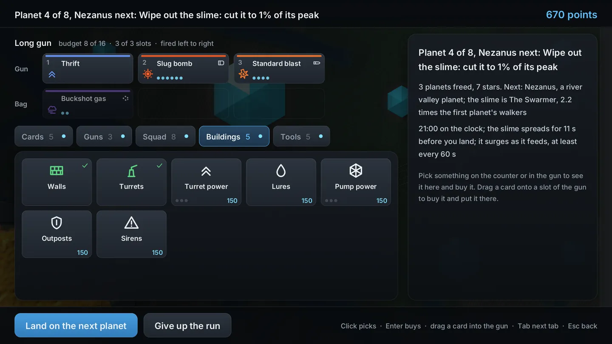<figcaption><span class="tag">After, Buildings</span><span class="count">7 of 7 (Walls and Turrets owned)</span><span class="muted">Buildings and Tools were folders that opened in place. Now they are tabs</span></figcaption></figure>
    <figure class="after">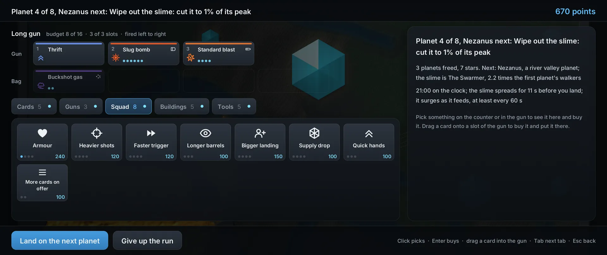<figcaption><span class="tag">After, 21:9 at 200%</span><span class="count">Squad 8 of 8</span><span class="muted">The widest frame: the bag shows four places and the pane grows with the screen</span></figcaption></figure>
  </div>
</section>

<section>
  <h2>The gun range armory</h2>
  <p>It uses the same frame with the range's own tabs. Guns are a table against the gun you carry. Bullets are a grid, with the shape down the side and the payload across the top. The modifiers have two shelves. The roll and empty tools sit on the bottom bar, beside Back to the range.</p>
  <div class="pair">
    <figure class="before">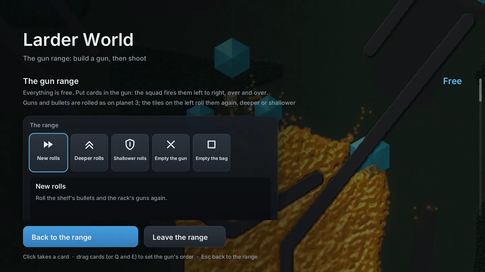<figcaption><span class="tag">Before, 200%</span><span class="count">5 tools on screen</span><span class="muted">The 8 guns, 20 bullets, 14 modifiers and the gun were below the fold</span></figcaption></figure>
    <figure class="after">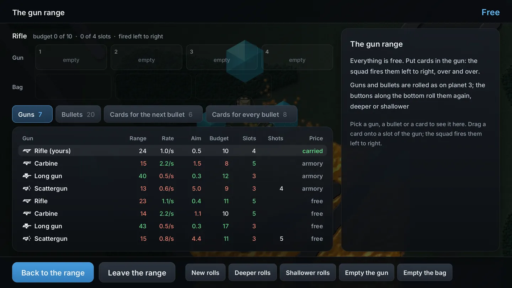<figcaption><span class="tag">After, 200%</span><span class="count">Guns 8 of 8</span><span class="muted">The rifle you carry is first. "armory" marks the guns you own, "free" the rolled ones</span></figcaption></figure>
    <figure class="after">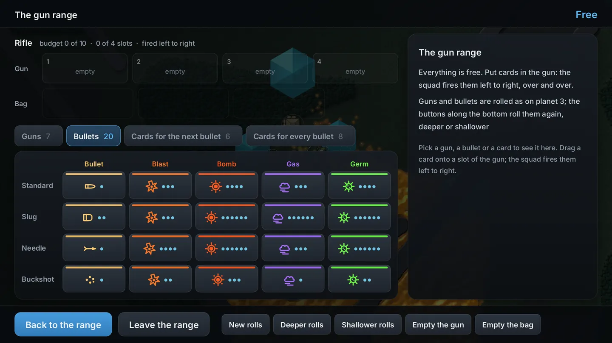<figcaption><span class="tag">After, 200%</span><span class="count">Bullets 20 of 20</span><span class="muted">Shapes Standard, Slug, Needle, Buckshot; payloads Bullet, Blast, Bomb, Gas, Germ. The dots are each bullet's budget</span></figcaption></figure>
    <figure class="after">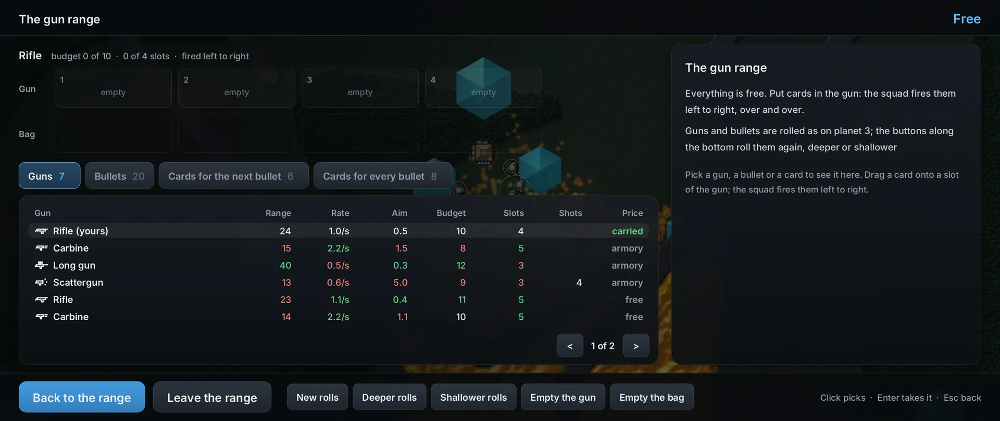<figcaption><span class="tag">After, 21:9 at 200%</span><span class="count">Guns 6 of 8, page 1 of 2</span><span class="muted">In the game's own shop and armory, the only tab that pages at the sizes the test checks. Its rows are already at their least height (22 units)</span></figcaption></figure>
  </div>
</section>

<section>
  <h2>At 125%, the window as it opens</h2>
  <div class="pair">
    <figure class="before">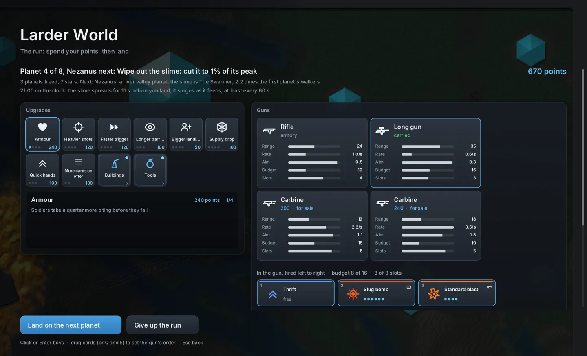<figcaption><span class="tag">Before</span><span class="count">Upgrades, 4 guns, the gun's 3 cards</span><span class="muted">The bag and the 5 cards on offer were below the fold</span></figcaption></figure>
    <figure class="after">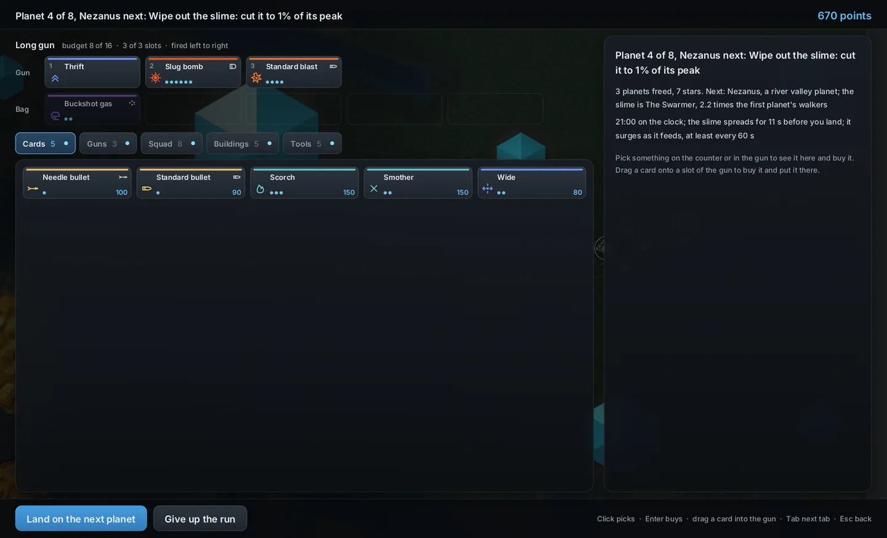<figcaption><span class="tag">After</span><span class="count">Everything; Cards 5 of 5 in one row</span><span class="muted">The counter keeps its height on every tab, so the frame does not jump when you change tabs</span></figcaption></figure>
    <figure class="before">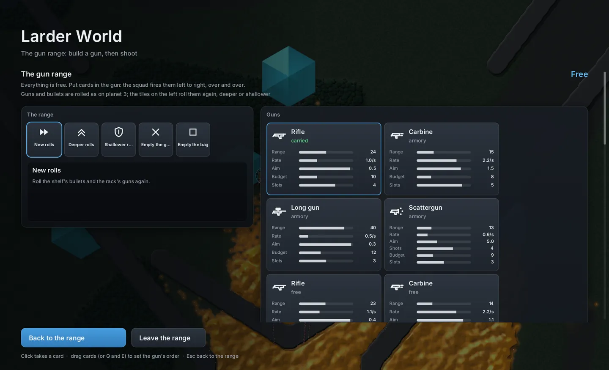<figcaption><span class="tag">Before</span><span class="count">The tools and 5 of 8 guns</span><span class="muted">Bullets and modifiers were below the fold</span></figcaption></figure>
    <figure class="after">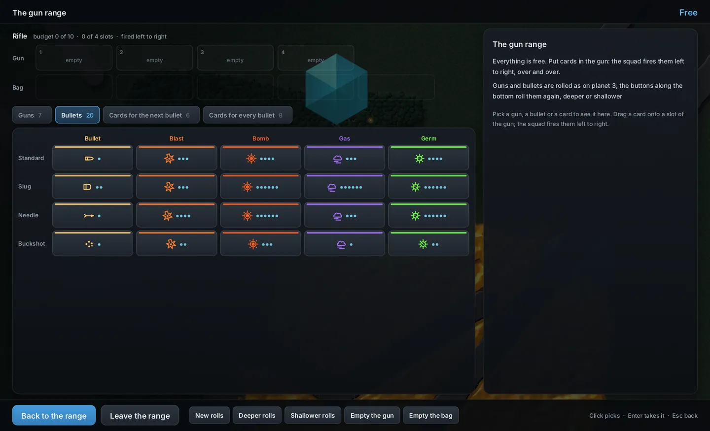<figcaption><span class="tag">After</span><span class="count">Bullets 20 of 20</span></figcaption></figure>
  </div>
</section>

<section>
  <h2>Menu A</h2>
  <p>The ways to play, then Options and Edit maps, then Quit, as one column of names. A single caption box beside the row under the cursor (else the keyboard's row) tells you what it is. The big title stays on this page only.</p>
  <div class="pair">
    <figure class="before"><figcaption><span class="tag">Before, 200%</span><span class="count">4 of 9 rows whole</span><span class="muted">From the research page, drawn before #362; the main page was the same then</span></figcaption></figure>
    <figure class="after">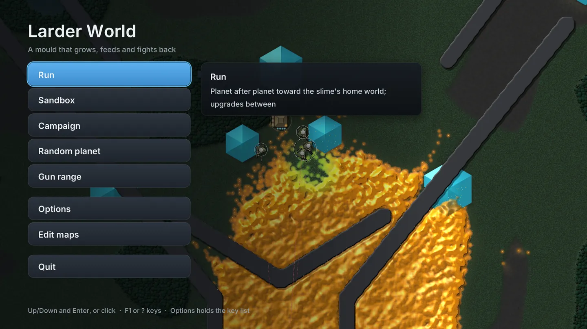<figcaption><span class="tag">After, 200%</span><span class="count">8 of 8 rows</span><span class="muted">Ends at 484 of 562 units</span></figcaption></figure>
  </div>
</section>

<section>
  <h2>Left for later</h2>
  <ul>
    <li>The bag shows outlines for its free places, so the gun and bag area keeps its height. With an empty bag, they read as blank slots.</li>
    <li>At 21:9 and 200%, the armory's guns take two pages.</li>
    <li>Card 2 (the command card) and your 19:51Z notes (no Burn a line, Guard as an order, click a building to select it) are being built in their own thread.</li>
  </ul>
</section>
</main>
